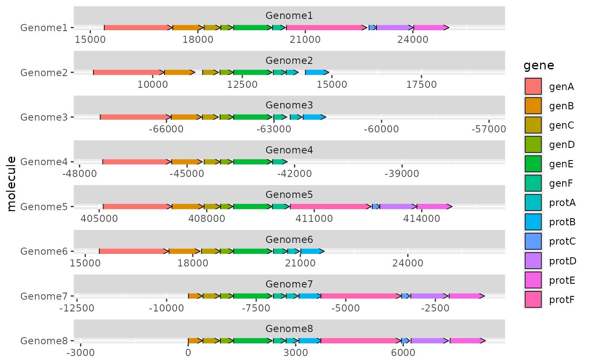

R/make_alignment_dummies.R
make_alignment_dummies.Rdmake_alignment_dummies() helps you to visually align genes across
molecules that have been faceted with a free x scale. The output of this
function is a data frame of dummy genes. If these dummy genes are added to a
'ggplot2' plot with ggplot::geom_blank(), they will extend the x axis
range in such a way that the start or end of a selected gene is visually
aligned across the facets.
make_alignment_dummies(data, mapping, on, side = "left")Data frame of genes. This is almost certainly the same data frame
that will later be passed to ggplot2::ggplot().
Aesthetic mapping, created with ggplot2::aes(). Must
contain the following aesthetics: xmin, xmax, y, and id (a unique
identifier for each gene).
Name of gene to be visually aligned across facets. This gene must
be present in 'data', in the column mapped to the id aesthetic.
Should the visual alignment be of the 'left' (default) or 'right' side of the gene?
dummies <- make_alignment_dummies(example_genes, ggplot2::aes(xmin = start,
xmax = end, y = molecule, id = gene), on = "genE")
ggplot2::ggplot(example_genes, ggplot2::aes(xmin = start, xmax = end,
y = molecule, fill = gene)) +
geom_gene_arrow() +
ggplot2::geom_blank(data = dummies) +
ggplot2::facet_wrap(~ molecule, scales = "free", ncol = 1)
